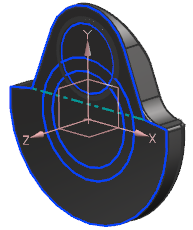
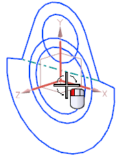
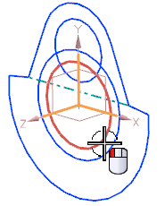

将几何体复制到组件中
-
点击标准工具条上的打开
 。
。 -
在打开对话框中，点击选项。
-
在装配加载选项对话框中，设置如下参数：
部件版本组：
-
加载 = 从文件夹
范围组：
-
加载 = 所有组件
-
使用部分加载 =

-
使用轻量级表示 =
-
加载部件间数据 =

-
加载父项 = 所有级别
-
-
点击确定。
-
打开 wav3_crankshaft_design_assembly。
在装配导航器中，您可以看到这个设计装配中已经创建了平衡重(counter weight)组件，主轴承(main bearing)组件与杆轴承(rod bearing)组件均为空，您将创建这些轴承实体。

-
右击装配导航器背景并确保已选中 WAVE 模式。
-
隐藏平衡重。

-
在装配导航器中，右击设计装配并选择 WAVE→将几何体复制到组件。
-
在部件间复制对话框的过滤器列表中，选择 CSYS。
-
选择如图所示的坐标系。

-
在过滤器列表中选择曲线。
-
选择如图所示的圆。

-
在选择步骤下方，点击组件 。
-
点击类选择。
-
在装配导航器中，选择主轴承。
-
点击 WAVE 组件间的复制对话框中的确定。
-
在部件间复制对话框中，点击确定以将几何体复制到主轴承组件中。
已在设计装配与主轴承部件间创建了两个部件间链接，部件间链接将储存在主轴承部件中。